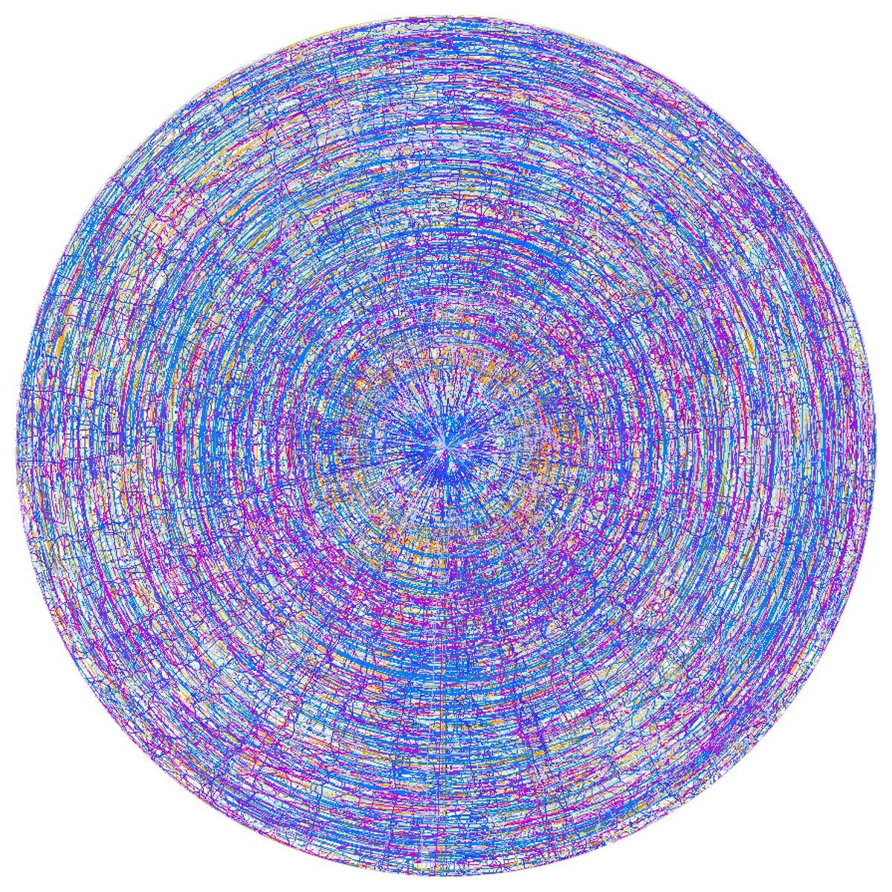
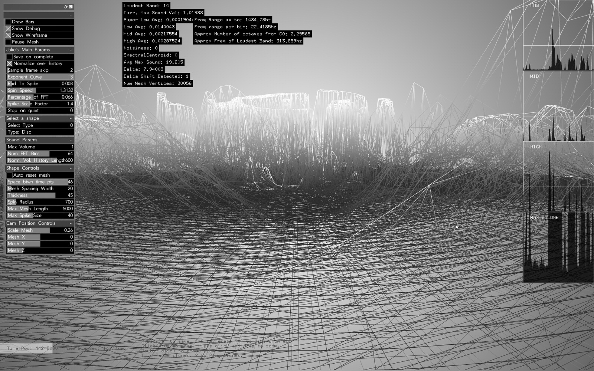
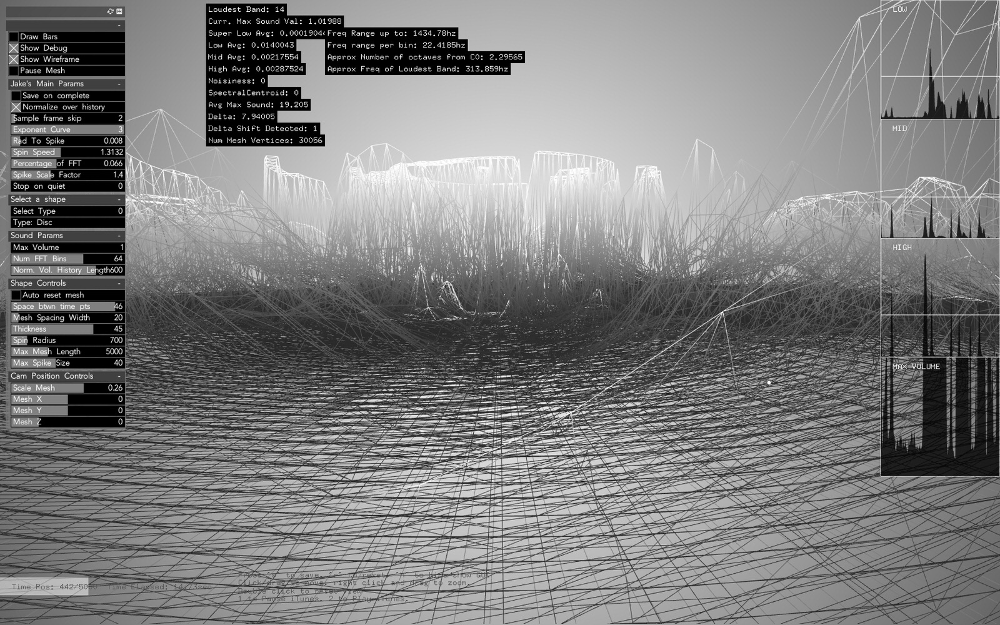

Taxonomy of Sound
2016, 3D Printed Sculptures
These forms are the remnants of sound waves immortalised in 3D printed sculptures. Humans have always been fascinated with how to capture and record the abstract and fleeting nature of sound into something more tangible, from writing musical notation, to grooves on a vinyl record, to bits of data in mp3 compression.
In my version, a custom C++ program analyses the spectral frequencies and then spins it into a 3D form. It does this by taking the frequencies of input audio (from a spectrogram) which is spun into 3D sculptural forms containing the lowest notes/frequencies in the centre and highest notes/frequencies around the circumference. To examine the digital artefacts and degradation in the digital process the forms are then 3D scanned and turned back into audio. The work is installed on 24 plinths in a dark room with spotlights and a small speakers inside the prints playing the reinterpreted audio which you need to get close to in order to hear.
The first series of 24 sculptures shows myself improvising musical phrases in every consecutive key on the piano as a homage to Bach’s Well-Tempered Clavier. Bach’s piece was the first piece of keyboard music written in every consecutive key in a newly conceived 12 note scale to try and make order out of keyboard instrument’s evolving tuning systems (equal temperament).
The harpsichords and organs of Bach’s time would have all sounded horrendously out of tune to our contemporary ears if not played in the key (or root note) it was tuned to. My sculptures encapsulate recordings of much looser and more personal improvised musical reflections. Meditations to be uttered once and then lost, only to be recorded in physical forms.
The second series examines the harmonics within different animal calls, spinning those into bone-like 3D sculptures placed next to the bones of the animal showing two very different remnants / artefacts / traces. Here both the animal’s calcium bodies and ephemeral sounds are given equal weight, both memorialised in physical form.

 
